Introduction :
Objectifs :
-
Mettre en pratique et vérifier les principes outils et technologies de sécurisation des hôtes (clients, serveurs, ...).
-
Expliquer et justifier les choix et solutions proposées.
Quelques sujets abordés :
-
Gestion des accès.
-
Gestion des comptes utilisateurs.
-
Logging / Monitoring.
-
Encryption - protection des données.
-
Infrastructures à base de certificats et de clé publique.
-
Détection d'intrusion basée sur l'hôte.
-
Sécurisation (hardening) de l'operating system.
-
Mise en oeuvre.
-
Liste évolutive et sujette à changement !
Perspectives :
-
Perspective d'entreprise.
-
Principes largement valables pour différents types d'operating systems.
-
Exemples principalement Linux (open-source).
-
"Bare metal", virtualisation, OS, containers, Cloud.
-
Approche défensive, mais aussi sensibilité offensive.
-
Exemples reproductibles.
-
Background : mix technique, administration, management.
Références :
-
Foundations of Information Security - A Straightforward Introduction - Jason Andress - No Starch Press, 2019.
-
Unix and Linux System Administration Handbook - fifth edition - Evi Nemeth and others- Addison-Wesley, 2018.
Environnement de travail :
-
VirtualBox pour la virtualisation.
-
Vagrant pour la création et la configuration d'environnements de développement légers, reproductibles et portables.
-
Ubuntu (et Windows) - autres distributions possibles.
-
Attention certains environnements délibérément vulnérables !
-
Connaissance de base du terminal pré-requise.
Instructions pour VirtualBox et Vagrant :
Nous utiliserons les outils VirtualBox et Vagrant pour virtualiser des environnements reproductibles sur vos ordinateurs.
Il faut les installer dans cet ordre-là.
Cela nécessite des droits d'administrateur sur sa machine et parfois une configuration spécifique du BIOS (activation des fonctions de virtualisation - parfois aussi SecureBoot).

ASSUREZ-VOUS DE PRENDRE LES TOUTES DERNIÈRES VERSIONS STABLES (au moment de la rédaction de cet article, testé sur Vagrant 2.4.9 et virtualbox 7.2.6 - virtualbox 7.2.0 n'est PAS stable, prendre les extensions virtualbox compatibles).
NÉCESSITE UN LINUX / WINDOWS / MAC OS récent (sur processeur Intel - support pour Silicon Apple en développement).
Si possible, installer en dualboot Linux si vous avez Windows.
Pour chaque environnement utilisé au cours, télécharger le folder correspondant (éventuellement le déziper) dans un folder spécifique, puis se déplacer dans ce folder.
Quelques commandes terminal Vagrant utiles (toujours dans le folder correspondant à l'environnement que l'on veut travailler) :
-
Pour démarrer un environnement :
vagrant upEn résumé, cette commande démarre la machine virtuelle définie dans le Vagrantfile (ou crée la VM si elle n'existe pas encore).
-
Pour rentrer dans l'environnement :
vagrant sshEn résumé, cette commande ouvre une session SSH vers la machine virtuelle.
-
Pour suspendre le fonctionnement de l'environnement :
vagrant haltEn résumé, cette commande éteint proprement la machine virtuelle.
-
Pour supprimer un environnement :
vagrant destroyEn résumé, cette commande supprime complètement la machine virtuelle (attention, les données seront perdues).
rm -rf .vagrantCette commande supprime seulement les métadonnéeslocales, mais la VM existe encore dans VirtualBox malgré que Vagrant perd la trace. C'est à utiliser uniquement si Vagrant est cassé.
Règle d'or : on fait toujours vagrant destroy avant rm -rf .vagrant.
-
Pour redémarrer la VM :
vagrant reload -
Pour afficher l'état de la VM :
vagrant status -
Pour relancer le provisioning :
vagrant provisionPour démarrer la VM et faire le provisioning :
vagrant up --provision -
Pour lister toutes les VMs Vagrant et supprimer celles qui n'existent plus :
vagrant global-status --pruneEn résumé, cette commande peut également nettoyer les IDs.
Instructions spécifiques à Linux/MacOS pour l'utilisation d'adresses spécifiques pour des machines virtualisées par VirtualBox :
Comme mentionné dans https://www.virtualbox.org/manual/topics/networkingdetails.html#networkingdetails, une configuration additionnelle est requise pour permettre à un hôte Linux/MacOS de se connecter à une machine virtuelle ayant une adresse spécifique : créer un fichier networks.conf à l'emplacement /etc/virtualbox et lui donner le contenu suivant (pour ce cours - bien mettre l'étoile au début) :
* 10.0.0.0/8 172.28.128.0/16Instructions SSH pour Windows :
Pour les utilisateurs utilisant Windows (10+) pour l'hôte, voir https://learn.microsoft.com/en-us/windows-server/administration/openssh/openssh-overview pour la configuration du client d'OpenSSH.
Notez que ssh-keyscan retourne un encodage UTF-16 (sur 2 bytes), là où le fichier known_hosts semble devoir être encodé en UTF-8 (1 byte pour ASCII). Pour passer de l'un à l'autre (dans le directory ~\.ssh) :
ssh-keyscan -t ecdsa t.x.y.z > .\known_hosts2En résumé, cette commande récupère la clé publique SSH du serveur.
gc .\known_hosts2 | sc -Encoding utf8 .\known_hostsEn résumé, cette commande convertit le fichier en UTF-8 pour compatibilité OpenSSH.
On peut après faire un ssh vers t.x.y.z sans recevoir d'avertissement sur l'authenticité du serveur.
Sécurité de l'information :
Notion de sécurité :
Notion de valeur : Quelle information a de la valeur ?
Caractérisation de la sécurité :
-
Confidentialité
-
Intégrité
-
Accessibilité
Les menaces :
Anderson : Interception, Interruption, Modification, Fabrication.
STRIDE - Microsoft : Spoofing, Tampering, Repudiation, Information Disclosure, Denial of Service, Elevation of Privilege.
Vulnérabilités & risques :
Vulnérabilité : Une faiblesse qui peut être exploitée.
Risque : Probabilité que quelque chose de négatif va se passer.
Processus de gestion des risques :
Processus - Anderson - https://www.ibm.com/fr-fr/topics/cyber-risk-management : Actifs → Menaces → Vulnérabilités → Risques → (Acceptation, Mitigation, Transfert) → ...
Mitigations / Contrôles :
-
Contrôles physiques.
-
Contrôles logiques / techniques.
-
Contrôles administratifs / organisationnels.
Gestion des accès :
Définitions :
-
Identification : Affirmation de qui on est.
-
Authentification : Apport d'une preuve de qui on est.
-
Autorisation Détermination de ce qu'une personne (chose) authentifiée peut faire.
Identification :
Concept :
-
Personne, chose, système.
-
Nom-Prénom, identifiant, adresse.
Vérification :
-
ID
-
Peut être (relativement) facilement dupliqué, donc faible force probante.
Authentification :
-
Quelque chose qu'on connaît.
-
Quelque chose qu'on est.
-
Quelque chose qu'on possède.
-
localisation, comportement, ...
Facteurs multiples :
-
2FA
-
...
Autorisation :
Concept : Qui peut faire quoi. En pratique, mis en oeuvre via le contrôle d'accès aux ressources.
Les types de contrôle d'accès sont :
-
Autoriser.
-
Interdire.
-
Limiter.
-
Révoquer.
Mise en oeuvre des contrôles d'accès :
Access Control List :
Pour une ressource donnée, qui peut faire quoi.
-
Fichiers.
-
Accès au réseau.
Capabilities - peu fréquent au niveau OS :
L'utilisateur possède un token. Accès aux resources basé uniquement sur la possession du token, pas de celui qui le possède.
Modèles de contrôle d'accès :
Qui détermine l'accès aux ressources.
-
Discretionary Access Control : Le propriétaire de la ressource.
-
Mandatory Access Control : Un groupe séparé détermine l'accès aux ressources.
-
Rule-based, Role-based, Multi-level Access Control : Souvent, pour environnements "sensibles".
Implémentation de contrôle d'accès type UNIX/Linux :
Principaux mécanismes - Evi Nemeth & others :
-
L'accès à une ressource se fait en contrôlant l'utilisateur essayant d'y accéder (et / ou le groupe de l'utilisateur).
-
Les ressources (fichier, processus) ont un propriétaire qui ont un accès large à la ressource.
-
Les propriétaires "possèdent" les ressources qu'ils créent.
-
L'utilisateur "root" peut agir comme le propriétaire de tout objet/ressource.
-
Certaines fonctions administratives sont réservées à l'utilisateur "root".
Contrôle d'accès aux fichiers :
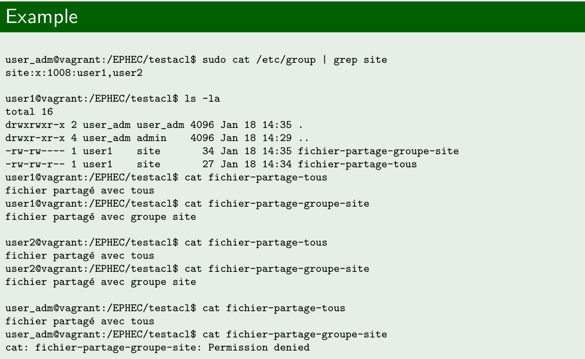Voici les différentes commandes exécutées dans l'image précédente :
sudo cat /etc/group | grep siteEn résumé, cette commande affiche les groupes dont le nom contient site.
ls -laEn résumé, cette commande liste tous les fichiers (y compris cachés) avec leurs permissions, propriétaires et groupes.
Chaque fichier ou répertoire possède trois blocs de permissions : u (user (propriétaire)), g (group) et o (others), chacun pouvant contenir les droits rwx.
Voici la signification des lettres et leurs valeurs :
| Lettre | Valeur | Fichier | Répertoire |
|---|---|---|---|
| r | 4 | lire le contenu | lister les fichiers |
| w | 2 | modifier | créer/supprimer |
| x | 1 | exécuter | entrer (cd) |
cat /EPHEC/testacl/fichier-partage-groupe-siteEn résumé, cette commande affiche le contenu du fichier si les permissions le permettent.
Voici le contenu du fichier `fichier-partage-groupe-site` :
fichier partagé avec groupe sitecat /EPHEC/testacl/fichier-partage-tousVoici le contenu du fichier `fichier-partage-tous` :
fichier partagé avec tousContrôle d'accès aux processus :
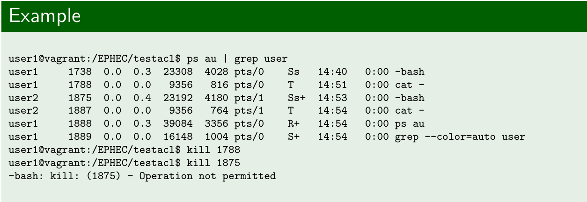Voici les différentes commandes exécutées dans l'image précédente :
ps au | grep userEn résumé, cette commande liste les processus et filtre ceux appartenant à user.
kill 1788En résumé, cette commande envoie un signal (SIGTERM par défaut) au processus 1788 afin de demander l'arrêt du processus.
kill 1875Actions privilégiées - root :
Les quelques actions privilégiées sont :
-
Réseau
-
Quotas.
-
Régler heure.
-
Installer software de bas niveau...
Voici les différentes commandes exécutées dans l'image précédente :
idEn résumé, cette commande affiche l'UID, le GID et les groupes de l'utilisateur courant.
cat /etc/shadow | grep userEn résumé, cette commande tente d'accéder aux mots de passe hashés. C'est une action réservée à root.
suid - changement de mot de passe :
Le bit SUID permet à un programe de s'exécuter avec l'UID du propriétaire du fichier (souvent root).
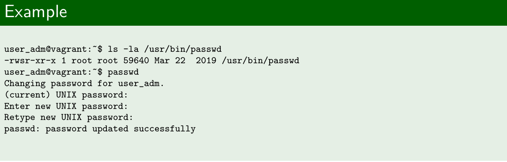Voici les différentes commandes exécutées dans l'image précédente :
ls -la /usr/bin/passwdEn résumé, cette commande montre que passwd est SUID root (s dans les permissions).
passwdEn résumé, cette commande change le mot de passe de l'utilisateur courant. Cela fonctionne grâce au bit SUID.
Exploitation suid programme mal sécurisé :
https://tbhaxor.com/exploiting-suid-binaries-to-get-root-user-shell/
Un programme SUID mal sécruisé peut mener à une escalade de priviilèges. Exemple d'exploitation via un binaire vulnérable.
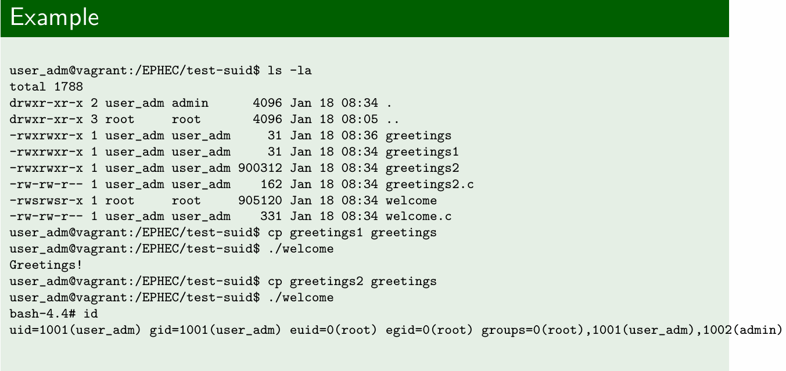Voici les différentes commandes exécutées dans l'image précédente :
cd /EPHEC/test-suidls -lacp greetings1 greetings./welcomecp greetings2 greetings./welcomeidCode :
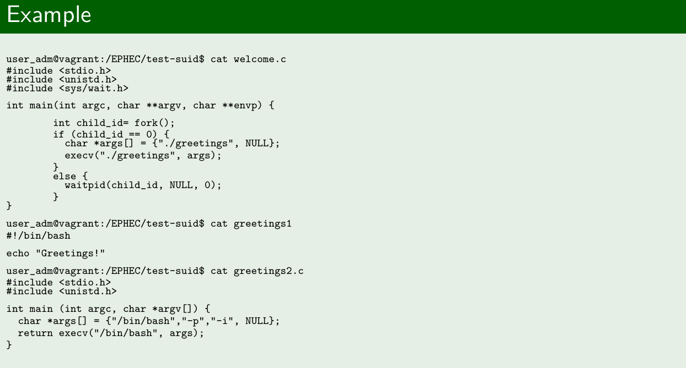Voici le contenu du fichier `welcome.c` :
#include <stdio.h>
#include <unistd.h>
#include <sys/wait.h>
int main(int argc, char **argv, char **envp) {
int child_id = fork();
if (child_id == 0) {
char *args[] = {"./greetings", NULL};
execv("./greetings", args);
} else {
waitpid(child_id, NULL, 0);
}
}Voici le contenu du fichier `greetings1` :
#!/bin/bash
echo "Greetings!"Voici le contenu du fichier `greetings.c` :
#include <stdio.h>
#include <unistd.h>
int main (int argc, char *argv[]) {
char *args[] = {"/bin/bash", "-p", "-i", NULL};
return execv("/bin/bash", args);
}Administration login root vs sudo - accès opportuniste :
root vs sudo :
-
root : partage du compte - peu ou pas de logging - problème de redevabilité.
-
sudo : actions spécifiques - logging des comandes - accès opportuniste contrôlé.
sudo cat /etc/shadow | grep userEn résumé, cela permet d'exécuter la commande avec les privilèges root.
Configuration sudo :
Création groupe et rattachement utilisateur :
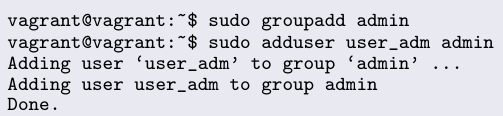Voici les différentes commandes exécutées dans l'image précédente :
sudo groupadd adminEn résumé, cette commande crée un nouveau groupe nommé admin.
sudo adduser user_adm adminEn résumé, cette commande ajoute l'utilisateur user_adm au groupe admin.
Contenu des groupes :
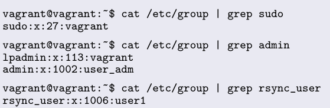Voici les différentes commandes exécutées dans l'image précédente :
cat /etc/group | grep sudocat /etc/group | grep admincat /etc/group | grep rsync_userhttps://www.sudo.ws/docs/man/1.7.10/sudoers.man/
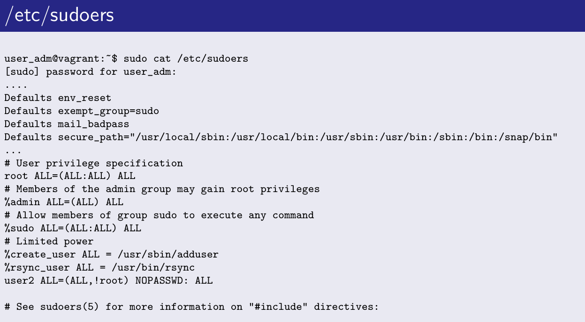sudo cat /etc/sudoersSécurité limitée sudo :
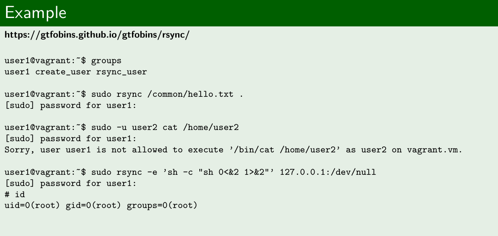https://gtfobins.github.io/gtfobins/rsync/
Voici les différentes commandes exécutées dans l'image précédente:
groupsEn résumé, cette commande liste les groupes de l'utilisateur courant.
sudo rsync /common/hello.txtsudo -u user2 cat /home/user2sudo rsync -e 'sh -c "sh 0<&2 1>2"' 127.0.0.1:/dev/nullEn résumé, cette commande est un exemple d'abus de sudo via un binaire autorisé. C'est une escalade de privilèges (GTFOBins).
idhttps://blog.sec-it.fr/en/2021/02/08/sudo-vulns/#CVE-2019-14287
Voici les différentes commandes exécutées dans l'image précédente :
sudo -u user1 ls /home/user1sudo cat /etc/sudoerssudo -u \#-1 /bin/bashidLes limites de sudo sont :
-
Possibilité d'abus via des binaires (GTFOBins).
-
Vulnérabilités connues (par exemple : CVE-2019-14287).
Windows :
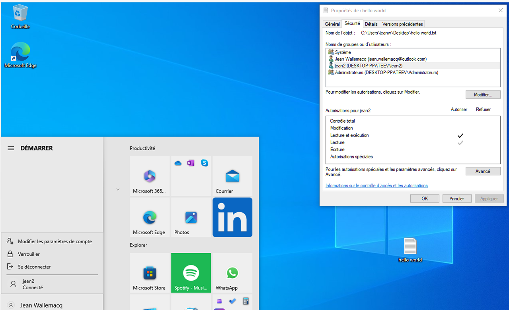 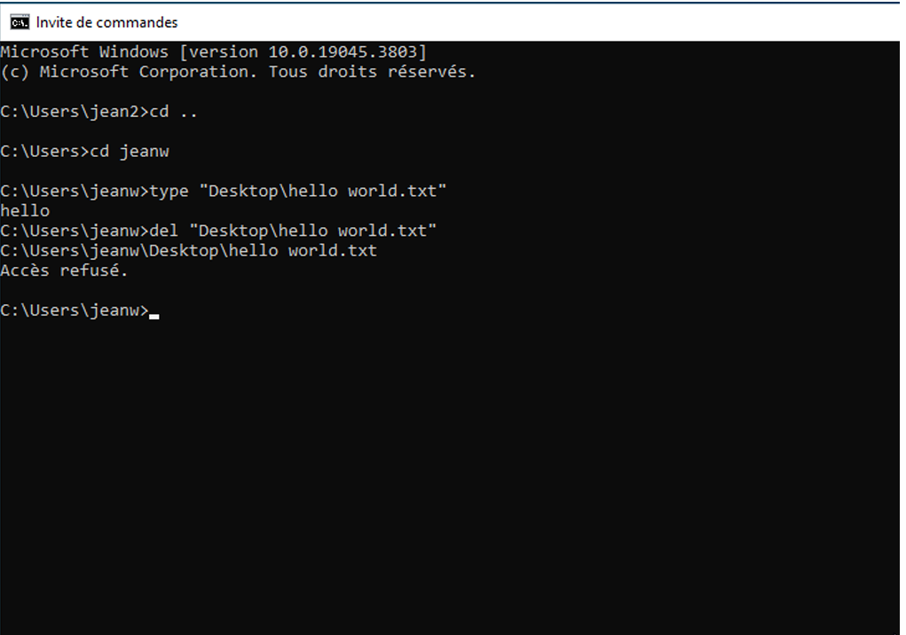Quelques différences :
-
Windows : modèle plus riche de droits d'accès.
-
Notion d'héritage de droits.
-
...
-
(voir par exemple : https://www.cs.cornell.edu/courses/cs513/2000SP/L07.html ou https://learn.microsoft.com/enus/windows/win32/ad/access-control-inheritance)
-
Modèles convergent (surtout avec extensions).
Extensions :
Limites du modèle type - Evi nemeth & others :
-
Root - point faible crucial : sudo ? - d'une certaine manière, étend la surface d'attaque.
-
suid - division des pouvoirs de Root, mais très vulnérable.
-
Dispersion des contrôles d'accès dans les différentes commandes - changement difficile.
-
N'adresse pas (vraiment) l'authentification dans un contexte réseau.
-
Difficulté d'audit - l'apparence à un groupe n'est pas indicatif des droits.
-
ACL limitées - rajout d'un membre à un groupe est une opération privilégiée.
ACL avancées (POSIX, il existe aussi NFSv4 proche Windows) :
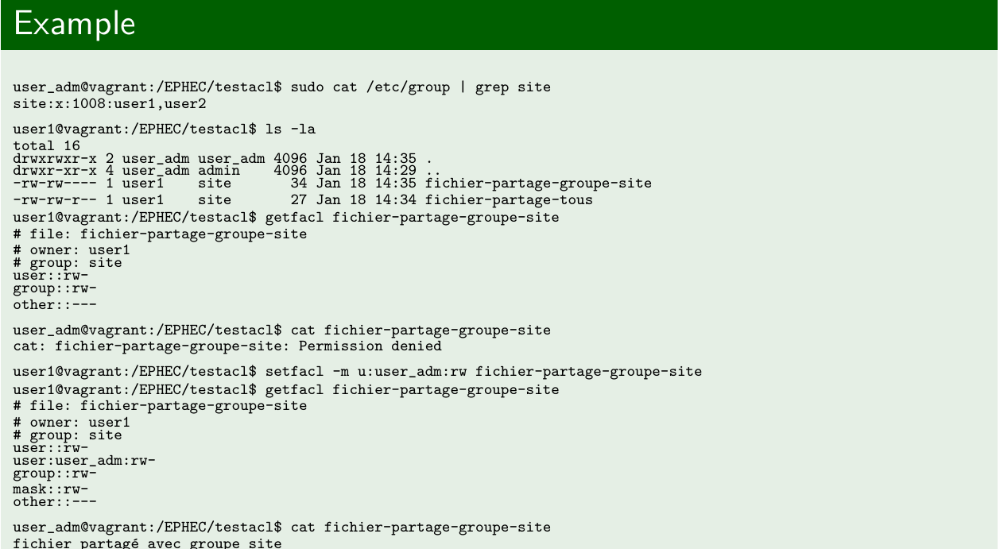Voici les différentes commandes exécutées dans l'image précédente :
sudo cat /etc/group | grep siteEn résumé, cette commande vérifie que le groupe site existe et quels utilisateurs en font partie.
ls -lagetfacl fichier-partage-groupe-siteEn résumé, cette commande affiche les ACL POSIX associéées au fichier.
su user_admcat fichier-partage-groupe-sitesu user1setfacl -m u:user_adm:rw fichier-partage-groupe-siteEn résumé, cette commande permet à user_adm d'obtenir des droits rw sans être propriétaire et sans modifier les permissions classiques.
getfacl fichier-partage-groupe-siteEn résumé, en réaffichant les ACL du fichier, on peut vérifier la présence de la ligne suivante :
user:user_adm:rw-su user_admcat fichier-partage-groupe-siteKerberos - authentification via tiers de confiance :
Isolation via namespaces/capabilities :
namespaces : Restriction "top down" de l'accès d'un processus aux ressources (fichiers, réseau, processus, etc.).
capabilities : Division des pouvoirs de root en privilèges "individualisés" (juste ouvrir un port réseau par exemple) (À ne pas confondre avec les capabilities comme substitut aux ACL).
Docker et namespace - vue sur les processus internes :
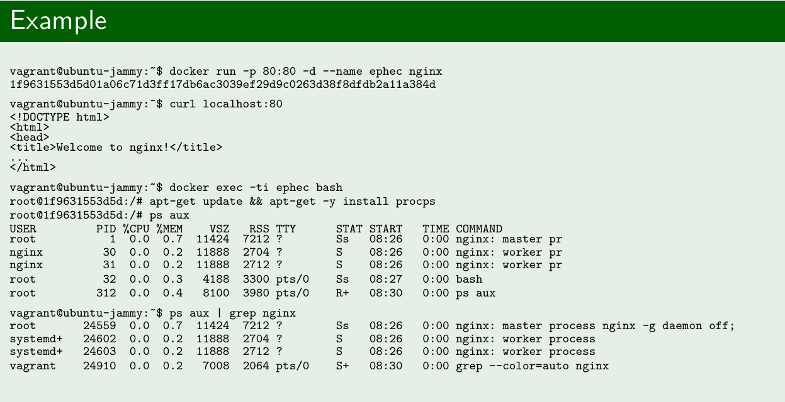Voici les différentes commandes exécutées dans l'image précédente :
docker run -p 80:80 -d --name ephec nginxcurl localhost:80<!DOCTYPE html>
<html>
<head>
<title>Welcome to nginx!</title>
...
</html>docker exec -ti ephec bashapt-get update && apt-get -y install procpsps auxps aux | grep nginxDocker et capabilities - désactivation sélective de chown :
Voici les différentes commandes exécutées dans l'image précédente :
docker run -t -i debian chown nobody /En résumé, cete commande tente de changer le propriétaire du répertoire racine / pour l'utilisateur nobody. La commande fonctionne car root possède toutes les capabilities Linux, dont CAP_CHOWN pour changer le propriétaire de fichiers.
docker run -t -i --cap-drop chown debian chown nobody /En résumé, cette commande retire à root dans le conteneur le droit de changer les propriétaires de fichiers. La commande échoue car, même si le processus est root dans le conteneur, il n'a plus la capability CAP_CHOWN et donc il ne peut plus exécuter chown.
Sécurité Docker - importance de la bonne configuration :
https://docs.docker.com/engine/security/
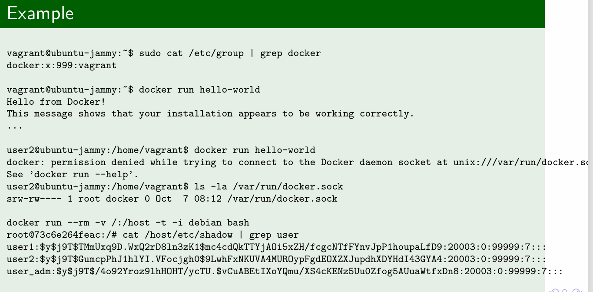Voici les différentes commandes exécutées dans l'image précédente :
sudo cat /etc/group | grep dockerEn résumé, cette commande affiche le groupe docker et ses membres. C'est important car les utilisateurs dans le groupe docker peuvent contrôler le daemon Docker. Or le daemon Docker tourne en root.
docker run hello-worldEn résumé, cette commande lance un conteneur de test pour vérifier que Docker fonctionne.
su user2docker run hello-worldls -la /var/run/docker.sockEn résumé, cette commande affiche les permissions du socket Docker.
exitEn résumé, cette commande quitte la session user2 et retourne à l'utilisateur précédent (souvent root ou vagrant).
docker run --rm -v /:/host -t -i debian bashEn résumé, cette commande donne au conteneur un accès direct au système de fichiers de l'hôte.
-
--rm : supprime le conteneur après arrêt.
-
-v /:/host monte la racine de l'hôte dans le conteneur.
-
debian shell : shell interactif.
cat /host/etc/shadow | grep userMAC - exemple Apparmor :
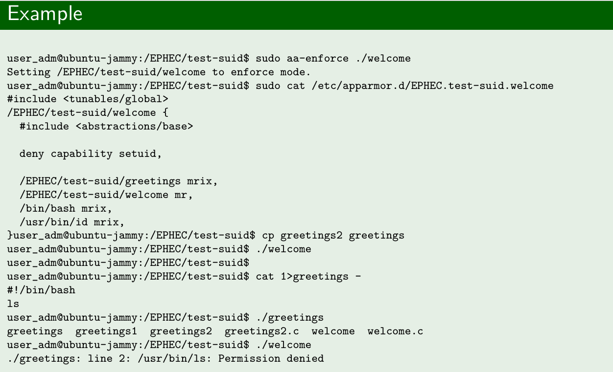Voici les différentes commandes exécutées dans l'image précédente :
sudo aa-enforce ./welcomeEn résumé, cette commande met le programme welcome en mode enforce AppArmor.
sudo cat /etc/apparmor.d/EPHEC.test-suid.welcomeEn résumé, cette commande affiche le profil AppArmor appliqué à welcome.
#include <tunables/global>
/EPHEC/test-suid/welcome {
#include <abstractions/base>
deny capability setuid,
/EPHEC/test-suid/greetings mrix,
/EPHEC/test-suid/welcome mr,
/bin/bash mrix,
/usr/bin/id mrix,
}cp greetings2 greetings./welcomecat 1> greetings -#!/bin/bash
ls./greetings./welcolmeAppArmor permet de restreindre finement les actions d'un binaire SUID, mais une mauvaise définition des chemins autorisés peut permettre l'exécution de code arbitraire.
Gestion des utilisateurs :
Le fichier des utilisateurs : /etc/passwd :
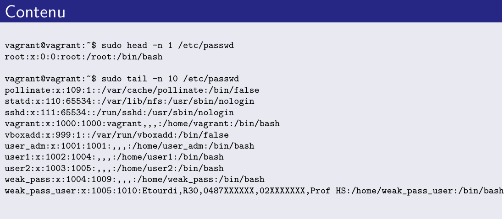Voici les différentes commandes exécutées dans l'image précédente :
sudo head -n 1 /etc/passwdEn résumé, cette commande affiche la première entrée du fichier /etc/passwd pour montrer le format d'un compte utilisateur.
sudo tail -n 10 /etc/passwdEn résumé, cette commande affiche les dix derniers comptes utilisateurs définis sur le système.
/etc/passwd - informations détaillées :
-
Username : purement conventionnel (peut être changé).
-
(hash du password - historique).
-
UID : identifiant numérique de l'utilisateur - coeur de l'identification.
-
GID : identifiant numérique du groupe - coeur de l'identification.
-
Informations administratives - peuvent être modifiées (limite sur Full Name).
-
Home directory - pas toujours présent.
-
Shell - pas toujours présent.
Utilisateurs techniques, utilisateurs avec id=0 :
Utilisateurs techniques (typiquement id inférieur à 1000) :
Typiquement, pour limiter l'accès aux ressources pour un programme spécifique, sans passer par root.
Utilisateurs avec id=0 :
-
Pouvoirs root.
-
Peuvent être multiples.
-
Peuvent ne pas s'appeler root.
-
... danger pour la sécurité ...
Authentification :
Authentification via mots de passe : /etc/shadow :
Le fichier /etc/shadow contient le hash du mot de passe, le salt, l'algorithme et les informations de validité.
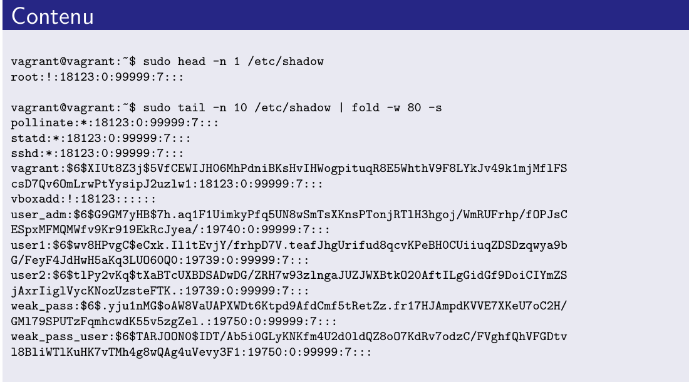Voici les différentes commandes exécutées dans l'image précédente :
sudo head -n 1 /etc/shadowEn résumé, cette commande affiche la première ligne du fichier contenant les mots de passe chiffrés.
sudo tail -n 10 /etc/shadow | fold -w 80 -sEn résumé, cette commande affiche les dernières entrées du fichier /etc/shadow en repliant les lignes pour une meilleur lisibilité. L'option -fold sert à casser les lignes trop longues. L'option -w 80 permet une largeur maximale de ligne de 80 caractères. L'option -s coupe proprement aux espaces (si possible), pas au milieu d'un mot.
/etc/shadow - informations détaillées :
-
user.
-
hash :
-
version
-
$6$ → SHA-512
-
$5$ → SHA-256.
-
$1$ → MD5.
-
-
salt = valeur aléatoire ajoutée avant le hash.
-
hash proprement dit.
-
-
diverses informations relatives au mot de passe (dernier changement, etc.).
-
Nombre de jours depuis le 1er janvier 1970 correspondant à la date de la dernière modification.
-
Nombre minimum de jours avant de pouvoir changer le mot de passe.
-
Nombre maximum de jours avant expiration.
-
Nombre de jours d'avertissement avant expiration.
-
Champ inactivité.
-
Date d'expiration du compte.
-
Champ réservé.
-
Importance de mots de passe compliqués : illustration :
Hashcat - https://hashcat.net/hashcat/ - https://github.com/danielmiessler/SecLists/tree/master
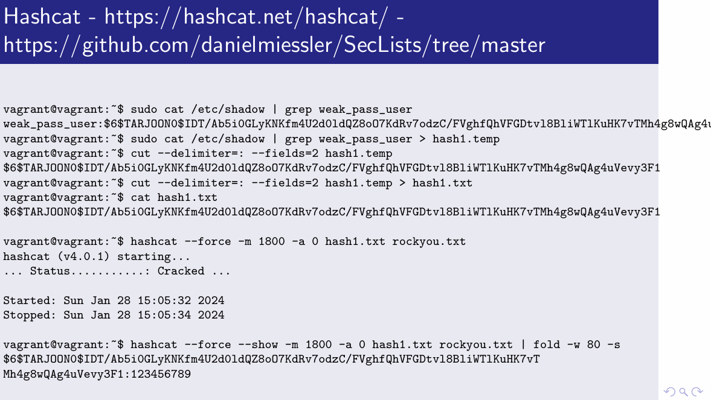Voici les différentes commandes exécutées dans l'image précédente :
sudo cat /etc/shadow | grep weak_pass_userEn résumé, cette commande extrait l'entrée correspondant à l'utilisateur ciblé dans /etc/shadow.
sudo cat /etc/shadow | grep weak_pass_user > hash1.tempcut --delimiter=: --fields=2 hash1.tempEn résumé, cette commande extrait uniquement le champ contenant le hash du mot de passe.
cut --delimiter=: --fields=2 hash1.temp > hash1.txtcat hash1.txthashcat --force -m 1800 -a 0 hash1.txt rockyou.txtEn résumé, cette commande lance une attaque par dictionnaire sur un hash SHA-512 pour démontrer la faiblesse d'un mot de passe.
hashcat --force --show -m 1800 -a 0 hash1.txt rockyou.txt | fold -w 80 -sVoici les différentes commandes exécutées dans l'image précédente :
sudo cat /etc/shadow | grep weak_pass:sudo cat /etc/shadow | grep weak_pass: > hash2.tempcut --delimiter=: --fields=2 hash2.tempcut --delimiter=: --fields=2 hash2.temp > hash2.txthashcat --force -m 1800 -a 0 hash2.txt rockyou.txtGestion des logins - par exemple la rotation des mots de passe :
https://www.baeldung.com/linux/password-complexity
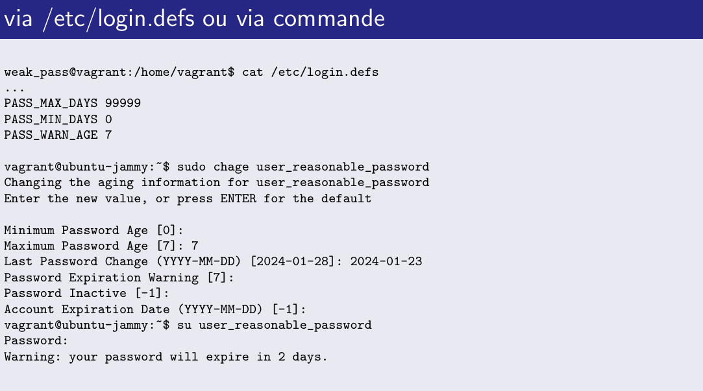Voici les différentes commandes exécutées dans l'image précédente :
cat /etc/login.defsEn résumé, cette commande affiche la configuration globale des règles de gestion des mots de passe.
sudo chage user_reasonable_passwordEn résumé, cette commande permet de configurer l'expiration et la rotation du mot de passe d'un utilisateur.
su user_reasonable_passwordDésactivation & réactivation d'un compte :
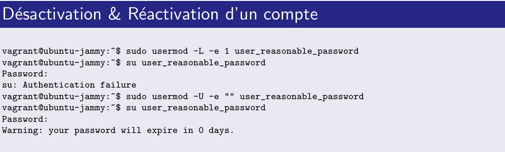Voici les différentes commandes exécutées dans l'image précédente :
sudo usermod -L -e 1 user_reasonable_passwordEn résumé, cette commande verouille le compte et force son expiration immédiate.
su user_reasonable_passwordsudo usermod -U -e "" user_reasonable_passwordEn résumé, cette commande déverouille le compte et supprime la date d'expiration.
su user_reasonable_passwordCentralisation authentification via Pluggable Authentication Module (PAM) :
login, passwd, sudo, etc. : répétition du code ?
Pluggable Authentication Module - centralisation logique :
-
auth : identification des utilisateurs.
-
account : limitation du nombre d'utilisateurs simultanés, etc.
-
sessions : actions à faire au début et à la fin d'une session.
-
password : complexité risque, type de hashage, etc.
Gestion de la complexité des mots de passe via PAM :
https://www.baeldung.com/linux/password-complexity
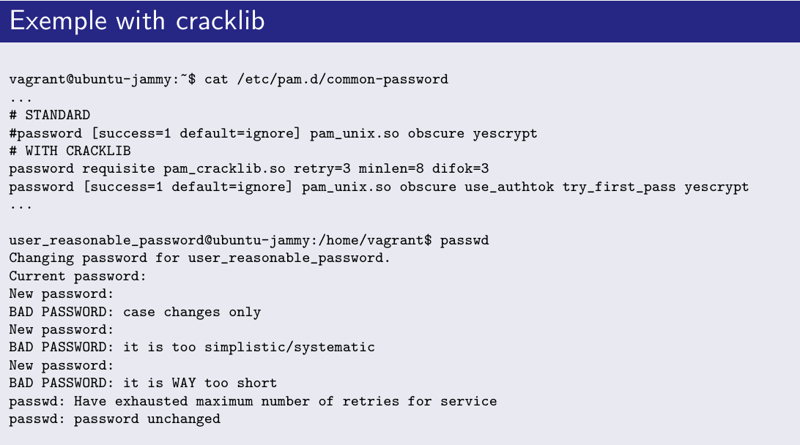Voici les différentes commandes exécutées dans l'image précédente :
cat /etc/pam.d/common-passwordsu user_reasonable_passwordpasswdGestion de la complexité du hashage des mots de passe via PAM :
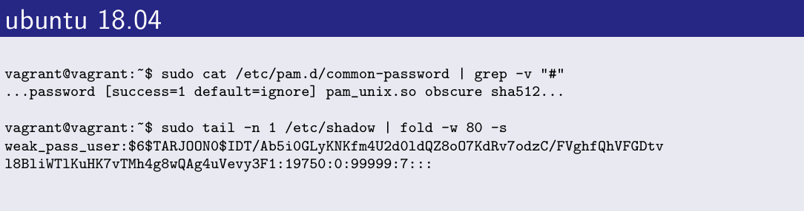Voici les différentes commandes exécutées dans l'image précédente :
sudo cat /etc/pam.d/common-password | grep -v "#"En résumé, cette commande affiche uniquement les règles PAM actives liées aux mots de passe.
sudo tail -n 1 /etc/shadow | fold -w 80 -sVoici les différentes commandes exécutées dans l'image précédente :
sudo cat /etc/pam.d/common-password | grep -v "#"sudo tail -n 2 /etc/shadow | fold -w 80 -sLa différence principale (en dehors de la version d'Ubuntu) concerne l'algorithme de hachage des mots de passe utilisé par PAM et stocké dans /etc/shadow. Dans Ubuntu 18.04, le hash commence par $6$ (SHA-512) alors que, dans Ubuntu 22.04, le hash commence par $y$ (yescrypt).
Implémentation 2FA via PAM :
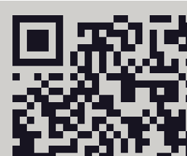 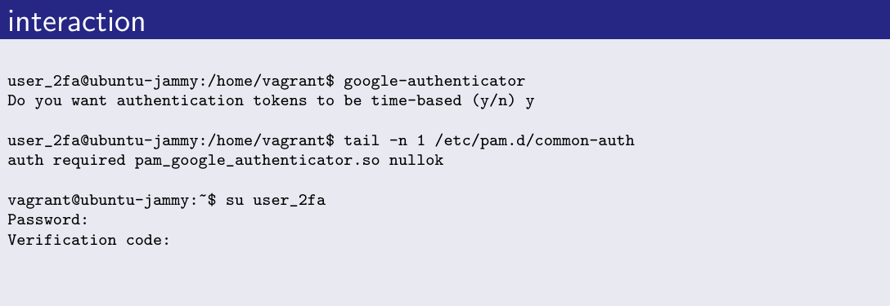Il faut ajouter l'utilisateur user_2fa avec la commande suivante :
sudo adduser user_2faVoici les différentes commandes exécutées dans l'image précédente :
google-authenticatorEn résumé, cette commande initialise l'authentification à deux facteurs pour un utilisateur.
tail -n 1 /etc/pam.d/common-authsu user_2faExercices :
Contexte :
-
Contexte d'entreprise :
-
Sites Web d'organisation hostés sur un serveur commun.
-
Sites "statiques", plusieurs utilisateurs autorisés à modifier le contenu de leur(s) site(s).
-
Nécessité de pouvoir mettre à jour le contenu & la configuration.
-
-
Actifs à protéger :
-
Contenu très important pour réputation.
-
Réelle menace de piratage du contenu, ou de le rendre indisponible.
-
Configuration :
-
Box Vagrant préconfigurée avec un serveur web.
-
Fichiers de configuration pour le serveur web dans /etc/nginx/conf.d :
-
client1.conf : premier site sur port 8081
-
client2.conf : premier site sur port 8082
-
-
Sites dans /var/www/site-client1 et /var/www/site-client2 :
-
/var/www/site-client1/index.html
-
/var/www/site-client2/index.html
-
Tâches :
Gestion des accès :
-
Vérifier qu'un quidam peut bien avoir accès aux deux sites (tuyau : curl).
curl http://localhost:8081curl http://localost:8082 -
Identifier les utilisateurs (user*) et les groupes (client*) (tuyau : /etc/passwd, /etc/group, /etc/shadow).
-
/etc/passwd → utilisateurs.
sudo cat /etc/passwd -
/etc/group → groupes.
sudo cat /etc/group -
/etc/shadow → authentification.
sudo cat /etc/shadow
-
-
Tester le changement du contenu de site-client1 - sans utiliser sudo (!) (tuyau : un utilisateur dans le bon "groupe").
-
Vérifier le groupe propriétaire du répertoire.
ls -la /var/www/site-client1 -
Ajouter l'utilisateur au groupe :
sudo usermod -aG client1 userX
-
-
Vérifier qu'un utilisateur non-autorisé ne peut pas changer le contenu de site-client1 (tuyau : voir "groupes").
-
Vérifier les permissions :
ls -ld /var/www/site-client1 -
Vérifierles groupes :
groups userX
-
-
Changer le port d'écoute de site-client2 en 8083 (tuyau : bien voir qui peut faire cette modification et à quelle condition - redémarrer le serveur avec sudo nginx -t suivi de sudo nginx -s reload).
sudo nano /etc/nginx/conf.d/client2.confsudo nginx -tsudo nginx -s reload
Gestion du cycle de vie des identités & des "credentials" :
-
Faire un "audit" des utilisateurs (qui a accès à quoi) - tous les utilisateurs listés sont-ils nécessaires ? (tuyau : ne pas oublier les utilisateurs privilégiés).
awk -F: '$3 >= 1000 {print $1}' /etc/passwdL'audit des utilisateurs vise à :
-
Identifier tous les comptes présents sur le système.
-
Déterminer leurs niveaux de privilèges.
-
Vérifier la légitimité et la nécessité de chaque compte.
-
Réduire la surface d'attaque en appliquant le principe du moindre privilège.
Les comptes sont listés dans le fichier /etc/passwd. On distingue deux catégories : comptes techniques (UID < 1000) et comptes utilisateurs (UID >= 1000).
L'audit doit impérativement inclure la vérification du droits d'administration.
L'utilisateur www-data est un compte technique utilisé par les serveurs web (Apache, Nginx). Il permet l'exécution des services web avec des privilèges restreints.
L'utilisateur ubuntu est un compte par défaut des images cloud Ubuntu et souvent membre du groupe sudo. Il sert généralement de compte administrateur initial.
sudo su -En résumé, cette commande ouvre une session complète en tant que root. Elle permet d'accéder aux fichiers protégés, d'inspecter la configuration système complète et de vérifier les privilèges effectifs. Elle doit être utilisée avec précaution dans un contexte de sécurité.
Le répertoire /etc/sudoers.d/ peut contenir des règles supplémentaires accordant des privilèges spécifiques à certains utilisateurs.
Sur les machines issues d'images cloud (AWS, Azure, etc.), on trouve souvent le fichier /etc/sudoers.d/90-cloud-init-users. Ce fichier est généré par cloud-init et peut contenur une règle telle que :
ubuntu ALL=(ALL) NOPASSWD:ALLEn résumé, cela signique que l'utilisateur ubuntu peut exécuter toutes les commandes en tant que n'importe quel utilisateur sans devoir saisir de mot de passe. Ceci constitue un privilège administratif complet.
-
-
Lors d'un contrôle périodique, vous constatez que user1 ne doit plus être autorisé à modifier son site - désactiver son compte (tuyau : voir sudo usermod) - Vérifier qu'il n'a effectivement plus accès.
sudo usermod -L user1 -
Un nouvel utilisateur user1b doit pouvoir modifier site-client1. Faire en sorte qu'il puisse le faire (tuyau : ne pas oublier le groupe).
sudo adduser user1bsudo usermod -aG client1 user1bSous Ubuntu, deux commandes permettent de créer des comptes utilisateurs : useradd et adduser. Bien qu'elles poursuivent le même objectif, leur nature et leur fonctionnement diffèrent.
Critère useradd adduser Niveau Bas niveau Haut niveau Interaction Non interactive Interactive Création du home directory Optionnelle Automatique Portabilité Toutes distributions Debian/Ubuntu Usage recommandé Scripts Administration courante -
Vous décidez que vous voulez implémenter la règle d'entreprise qui dit que les mots de passe doivent être changés régulièrement. Modifier la configuration de user2 pour que son mot de passe expire après 7 jours et forcez la date de dernière mise à jour du mot de pa1sse à un jour en septembre (tuyau : sudo chage). Vérifier qu'il doit effectivement donner un nouveau mot de passe.
sudo chage -M 7 -d 2023-01-01 user2 -
Comment vous-y prenez vous pour organiser et exécuter la tâche de vérification des identités et des "credentials" (tuyau : penser plan-do-check-act).
Bonus : création d'un troisième site web :
-
Créer éventuellement un nouveau groupe et un nouvel utilisateur.
-
Créer un nouveau fichier de configuration dans /etc/nginx/conf.d (tuyau : utiliser un port non utilisé - qui peut faire cette opération et à quelle condition ?).
-
Créer un nouveau directory dans /var/www/ (tuyau : peser à changer le groupe et changer les droits en 2775 - qui peut faire cette opération et à quelle condition ?).
-
Créer un nouveau fichier index.html dans le directory nouvellement créé.
-
Vérifier que tout fonctionne bien (tuyau : penser à redémarrer le serveur).
-
Donner des droits "sudo" à user_adm et vérifier qu'il peut effectuer des tâches administratives relatives aux sites.
sudo usermod -aG sudo user_adm
Environnement de travail :
Boîtes à démarrer dans l'ordre :
-
Boîte network-identity-server (sso-server.hs.be) :
-
Serveur d'identité.
-
Serveur d'authentification (tiers de confiance).
-
Initialisée avec un utilisateur.
-
-
Boîte network-identity-service (sso-service.hs.be) :
-
Se réfère à sso-server.hs.be pour l'obtention des informations d'identité et d'authentification.
-
Est enregistré en tant que machine auprès du serveur d'identité / d'authentification.
-
Expose un service SSH configuré pour utiliser les services réseau d'authentification et d'authentification.
-
-
Boîte network-identity-client (sso-client.hs.be) :
-
Se réfère à sso-server.hs.be pour l'obtention des informations d'identité et d'authentification.
-
Contacte sso-service.hs.be en SSH sans devoir se réauthentifier (single sign on).
-
Notions :
Notion & Motivation :
-
Notion :
-
Mêmes utilisateurs/'credentials' sur toutes les machines du réseau.
-
(Single Sign On - SSO) Ne s'identifier/s'authentifier qu'une seule fois pour une période de temps.
-
-
Motivations Administrateur / Responsable Sécurité :
-
Gestion intégrée des utilisateurs et des droits, notamment utilisateurs avec accès privilégié (sudo).
-
Politique mots de passe etc. unifiée...
-
... mais point de faiblesse unique si compte compromis.
-
(SSO) Centraliser au niveau du réseau l'authentification - pas de compromission des mots de passe si un service est compromis.
-
-
Motivation Utilisateurs :
-
Exigence de mots de passe forts plus supportable.
-
(SSO) Facilité d'utilisation.
-
Composants :
-
Interface client :
-
sswitch & Pluggable Authentication Module (PAM - Encore lui !) - où trouver l'info & configurer l'authentification.
-
System Security Services Daemon (SSSD) - tâche de fond.
-
-
Gestion centralisée de l'identité :
-
Le plus souvent, Lightweight Directory Access Protocol (LDAP).
-
-
Gestion centralisée de l'authentification :
-
Directement sur le serveur d'identité LDAP - pas de SSO.
-
Avec Kerberos - nécessaire pour SSO.
-
Serveur d'identité (et éventuellement d'authentification) :
LDAP :
-
Un protocole pour accéder à un annuaire via TCP/IP.
-
Annuaire peut être général, mais en pratique bien adapté pour données d'identité et d'authentification.
-
Accès idéalement sécurisé via TLS (certainement si Authentification).
Voici les différentes commandes exécutées dans l'image précédente :
ldapsearch -x -LLL -b dc=hs,dc=be '(uid=john)'ldapsearch -x -LLL -b dc=hs,dc=be '(cn=john)'En résumé, ldapsearch est un outil pour interroger un annuaire LDAP. -x utilise l'authentification simple, -LLL produit une sortie épurée, -b dc=hs,dc=be définit la base DN, et '(uid=john)' ou '(cn=john)' est le filtre de recherche.
Authentification réseau - Single Sign On :
Kerberos - authentification via tiers de confiance et "session keys" :
Principes de fonctionnement :
Tiers de confiance :
-
Authentification préalable des utilisateurs (et des services !) auprès d'un tiers de confiance.
Échanges utilisateur - serveur - version simplifiée(!) :
-
L'utilisateur reçoit du tiers de confiance :
-
un secret ("session key") encrypté avec le mot de passe de l'utilisateur.
-
un "ticket" qui contient le secret, encrypté avec le mot de passe du service.
-
-
L'utilisateur décrypte le secret.
-
L'utilisateur encrypte une requête contenant un "timestamp" encrypté avec le secret et l'envoie au service, en même temps que le "ticket".
-
Le service décrypte le ticket, avec son propre mot de passe, et utilise le secret pour décrypter la demande de l'utilisateur.
-
Seul un utilisateur valide peut produire une requête valide - il doit avoir une connaissance du secret commun entre lui et le service.
-
... à aucun moment le mot de passe n'est échangé en clair.
-
... à aucun moment le service n'a connaissance du vrai mot de passe de l'utilisateur !
-
Le secret et ticket n'ont qu'une durée de vie limitée.
Single Sign On :
-
Le secret initial peut servir comme "credential" entre l'utilisateur et un service spécial et centralisé qui crée des "sous-secrets et sous-tickets".
-
Ces "sous-secrets et sous-tickets" sont utilisés par l'utilisateur pour accéder à d'autres services, sans redonner son mot de passe - single sign on !
-
Le secret initial a de toute façon une durée de vie limitée.
Très bonne explication : https://wpollock.com/AUnixSec/MoronsGuideToKerberos.htm
Configuration des clients :
Configuration nsswitch & PAM du client (voir Vagrant pour sources) :
-
Configuration nsswitch - où trouver l'information :
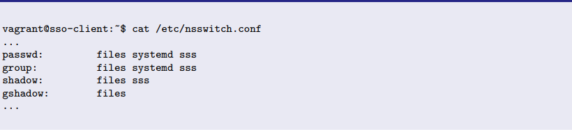cat /etc/nsswitch.confEn résumé, cette commande affiche le fichier nsswitch.conf, qui définit comment le système résout les utilisateurs et groupes (fichiers locaux, LDAP, etc.).
-
Configuration de Pluggable Authentication Module - gestion authentification :
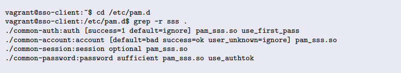Voici les différentes commandes exécutées dans l'image précédente :
cd /etc/pam.dEn résumé, cette commande accède aux fichiers de configuration PAM.
grep -r sssEn résumé, cette commande recherche l'utilisation de SSSD pour l'authentification.
Configuration sssd du client :
-
Pour mémoire :
-
Résolution de nom de domaine (ici route statique vers ss-server.hs.be).
-
Couche Transport Layer Security (TLS), avec certificat pour le serveur d'identité - pour la sécurité (pas implémenté ici).
-
-
sssd.conf :
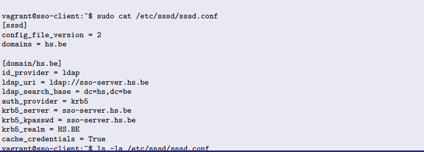sudo cat /etc/sssd/sssd.confEn résumé, cette commande affiche la configuration de SSSD, qui gère l'authentification centralisée.
Gestion centralisée de l'identité :
Client utilisant serveur d'identité :
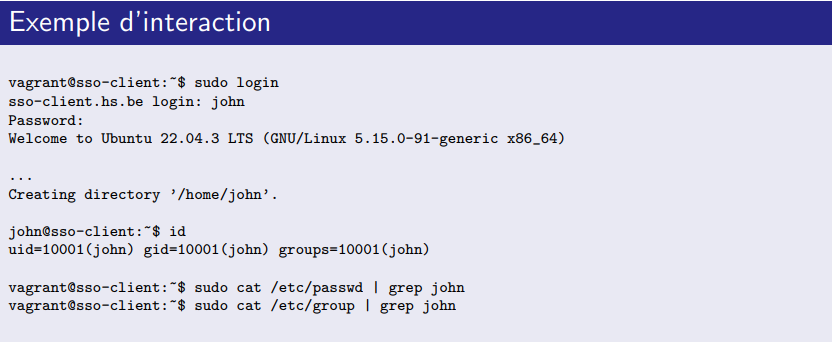Voici les commandes exécutées dans l'image précédente :
sudo loginEn résumé, cette commande ouvre une session.
idEn résumé, cette commande montre l'UID/GID/groupes
sudo cat /etc/passwd | grep johnsudo cat /etc/group | grep johnEn résumé, ces deux commandes vérifient la présence de l'utilisateur dans les fichiers système.
Gestion centralisée de l'authentification :
Authentification centralisée - login puis SSH sans réauthentification :
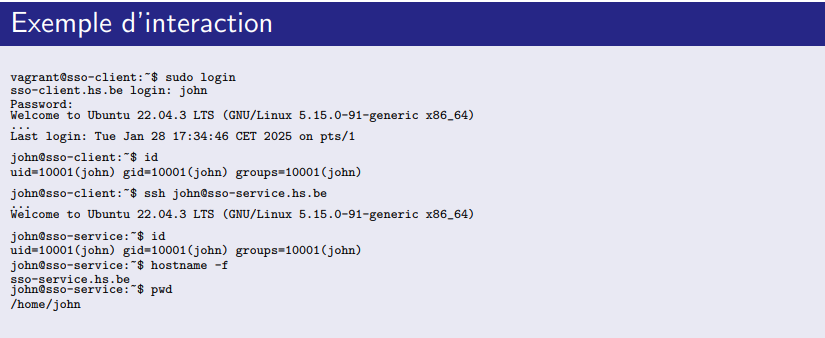Voici les différentes commandes exécutées dans l'image précédente :
sudo loginidssh john@sso-service.hs.beEn résumé, cette commande se connecte à la machine distante.
idpwdEn résumé, cette commande affiche le répertoire courant.
Authentification centralisée - "tickets" sur client :
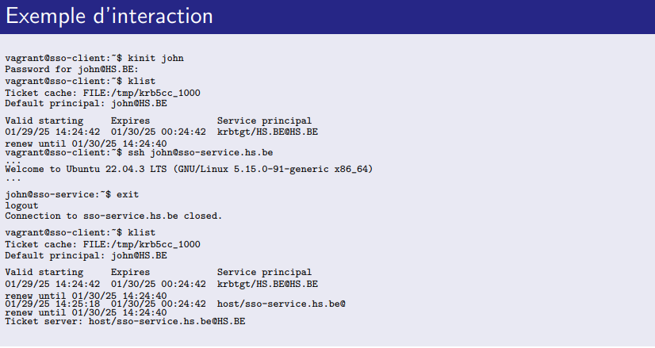Voici les différentes commandes exécutées dans l'image précédente :
kinit johnEn résumé, cette commande récupère un ticket Kerberos.
klistEn résumé, cette commande affiche le ticket.
exitEn résumé, cette commande ferme la session.
klistEn résumé, cette commande vérifie que le ticket a disparu.
Authentification centralisée - Contenu de la base des "principals" de Kerberos :
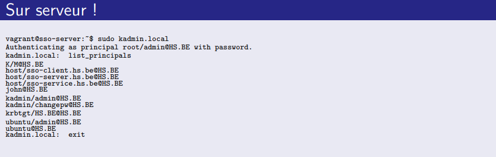sudo kadmin.localEn résumé, cette commande ouvre l'administration Kerberos locale.
Ajout d'un utilisateur :
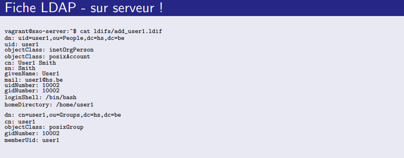cat ldifs/add_user1.ldifEn résumé, cette commande affiche le fichier LDIF décrivant le nouvel utilisateur pour LDAP.
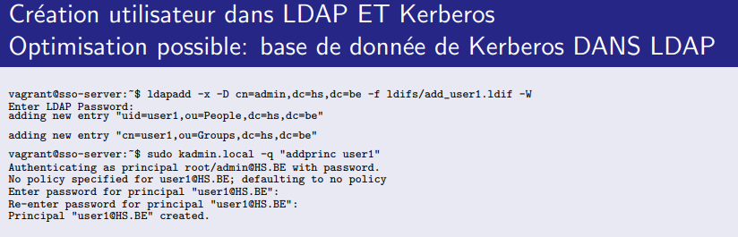Voici les différentes commandes exécutées dans l'image précédente :
ldapadd -x -D cn=admin,dc=hs,dc=be -f ldifs/add_user1.ldif -WEn résumé, commande ajoute l'utilisateur à LDAP. Voici les différentes options et leurs explications :
-
-x : auth simple.
-
-D : DN de l'admin.
-
-f : fichier LDIF.
-
-W : demande le mot de passe de l'admin.
sudo kadmin.local -q "addprinc user1"En résumé, cette commande crée un utilisateur dans la base Kerberos.
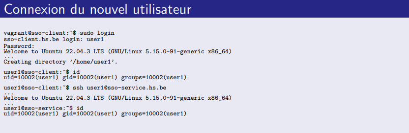Voici les différentes commandes exécutées dans l'image précédente :
sudo loginidssh user1@sso-service.hs.beidÉvaluation - instructions provisoires :
Objectifs / critères UE 478 :
-
Capacités à démontrer :
-
Mettre en pratique les principes, outils et technologies de sécurisation des hôtes.
-
Expliquer et justifier les choix et solutions.
-
...En mobilisant du matériel informatique pertinent (serveur, client, réseau...), éventuellement virtualisé.
-
-
Critères :
-
Pertinence des solutions.
-
Analyse des éléments sécurisés versus "coût".
-
Respect timing/format.
-
Cohérence de la justification.
-
Clarté & précision du vocabulaire.
-
Travail pratique :
Contenu :
-
Description du contexte :
-
Contexte d'entreprise et infrastructure globale.
-
Description des actifs à protéger, des principales menaces.
-
-
Principaux contrôles techniques mis en place :
-
Architecture globale.
-
Liste des contrôles techniques mis en place.
-
Justification au regard des menaces.
-
-
Démonstration de la mise en place de minimum cinq contrôles techniques :
-
(De préférence dans un environnement virtualisé).
-
Configuration.
-
Démonstration d'une menace potentielle.
-
Démonstration du fonctionement du contrôle.
-
Limites du contrôle mis en place.
-
-
Conclusions.
Exemple de contexte :
-
Contexte d'entreprise :
-
Site Web d'une organisation.
-
Site "statique", plusieurs utilisateurs autorisés à modifier le contenu à partir de leurs ordinateurs "clients".
-
Serveur derrière pare-feu.
-
Nécessité de pouvoir mettre à jour le contenu & la configuration "à distance".
-
-
Actifs à protéger :
-
Contenu très important pour réputation.
-
Réelle menace de piratage du contenu, ou de le rendre indisponible.
-
-
Configuration à présenter :
-
Au moins 2 "types de machines" (terminal, serveur, etc.).
-
Au moins 5 contrôles techniques mis en place.
-
-
Rapport :
-
Contexte d'entreprise.
-
Justification des choix pour les contrôles.
-
Analyse risque - menace - coût - risque résiduel.
-
Discussion sur alternatives possibles.
-
Timing ENCORE À FINALISER :
-
19/5 - Remise Contexte + Atelier.
-
Semaine du 26/5 (à déterminer) - Atelier.
-
1/6 - Remise travail.
-
5/6 - Défense travail.